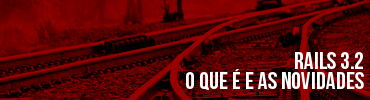
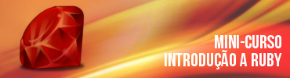
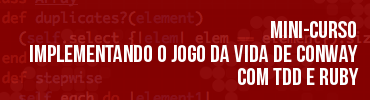

O que é o Ruby Miners?
O Ruby Miners é um evento gratuíto com o objetivo de disseminar a linguagem de programação Ruby para a comunidade local.
O que é o Ruby?
Ruby é uma linguagem de programação interpretada multiparadigma, de tipagem dinâmica e forte. Ruby suporta programação funcional, orientada a objetos, imperativa e reflexiva. Se tornou conhecida mundialmente através do framework web Ruby on Rails.
Para quem é este evento?
O evento tem o objetivo disseminar a linguagem para programadores que ainda não conhecem Ruby ou que já ouviram falar e tem mais interesse de conhecer.
Programação
| Horário | Local | Atividade |
|---|---|---|
| 09:00 - 10:00 hs | Auditório | Sushi e Ruby: experiência e exigência. |
| 10:00 - 11:00 hs | Sala 1 | Mini-curso de introdução a Ruby |
| Sala 2 | Mini-curso: Implementando o jogo da vida de Conway com TDD e Ruby | |
| 11:00 - 12:00 hs | Auditório | Rails 3.2, o que é e as novidades. |
Palestras
(Anderson Dias)
Muitas coisas do Japão me fascinam, mas dentre elas posso dizer que duas são especiais: Sushi e Ruby. Mas o que é que Sushi tem a ver com programação? Quero mostrar para vocês que experimentar coisas novas (e estranhas) podem nos tornar melhores desenvolvedores. Foi assim que me aventurei a conhecer Ruby. Foi assim que aprendi a ser um melhor programador e a ser mais exigente com relação as linguagens de programação.
(Lucas Castro)
Ruby on Rails é a biblioteca para desenvolvimento web mais conhecida feita em Ruby. A sua evolução, desde o seu lançamento, trouxe novos padrões para o desenvolvimento web e até hoje tem trazido grandes novidades. Nesta palestra você verá o que é Ruby on Rails e quais as novidades da recém-chegada versão 3.2.
Mini-cursos
(Lucas Castro)
Neste mini-curso você aprenderá na prática porque Ruby estar se tornando uma linguagem tão conhecida em todo o mundo. Queremos mostrar para você o quanto pode ser divertido programar em Ruby e o poder que essa linguagem tem.

(Anderson Dias)
O jogo da vida foi desenvolvido pelo matemático Jonh Horton Conway em 1970. O jogo é um autômato celular e seu objetivo é de reproduzir, através de regras simples, as alterações e mudanças em grupos de seres vivos. Vamos ver como podemos utilizar o TDD (desenvolvimento guiado por testes) em Ruby para implementar esse jogo.
Inscrições
Nosso primeiro encontro tem vagas limitadas para os mini-cursos. Serão 40 vagas e a prioridade será para os primeiros inscritos no evento.
Inscrições abertas
As vagas dos mini-cursos foram preenchidas
Se você não conseguiu garantir sua vaga para o mini-curso, não deixe de ir ao encontro. Inscreva-se!. Caso no dia do evento existam vagas disponíveis você poderá assistir os mini-cursos mesmo que não tenha feito sua inscrição com antecedência.
Por uma questão de regras do IFRN, só poderão ter acesso as dependências da instituição os participantes cadastrados. As inscrições ficarão abertas até quinta-feira.
As duas palestras serão ministradas no laboratório audio-visual que possui capacidade maior, portanto não deixe de ir.
As inscrições serão encerradas caso cheguemos a 60 participantes por uma limitação de espaço, já correndo o risco de não ter lugar para todos.
Quando
10 de março de 2012
Local
O evento será realizado no IFRN - Instituto Federal de Educação, Ciência e Tecnologia do Rio Grande do Norte: